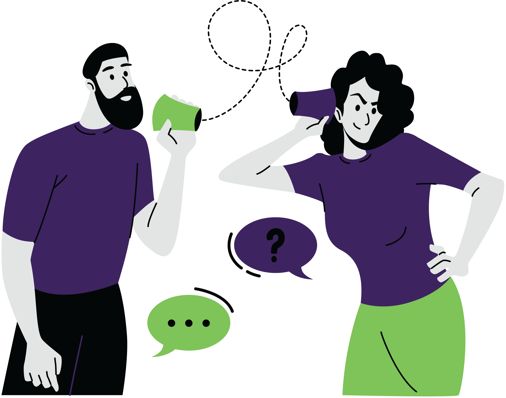
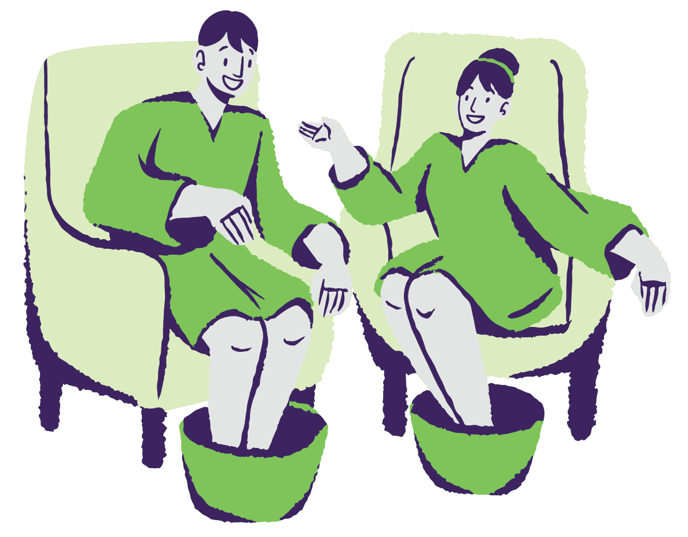
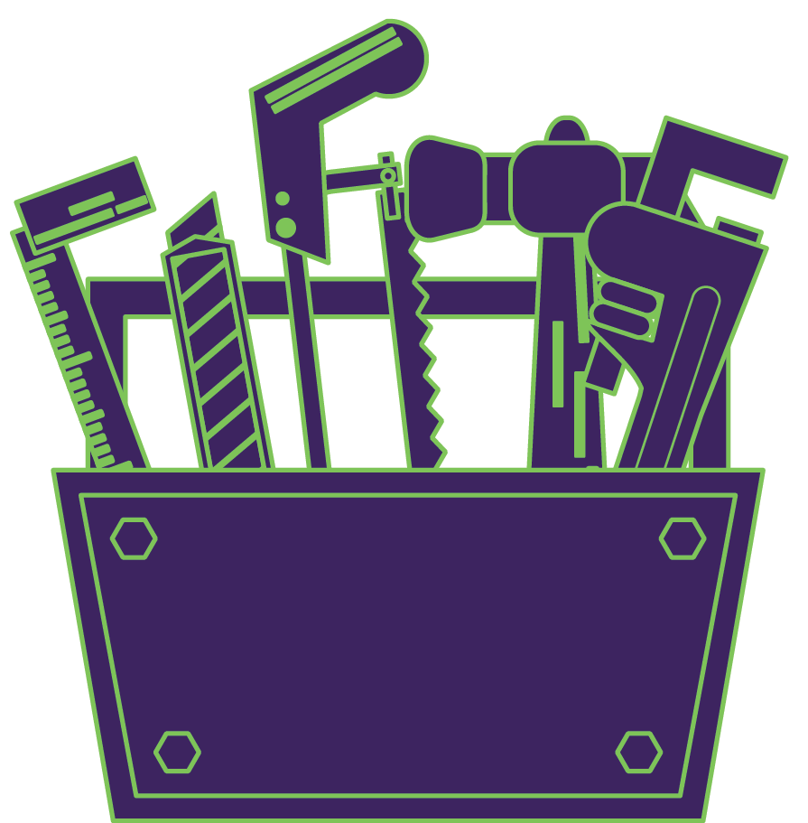
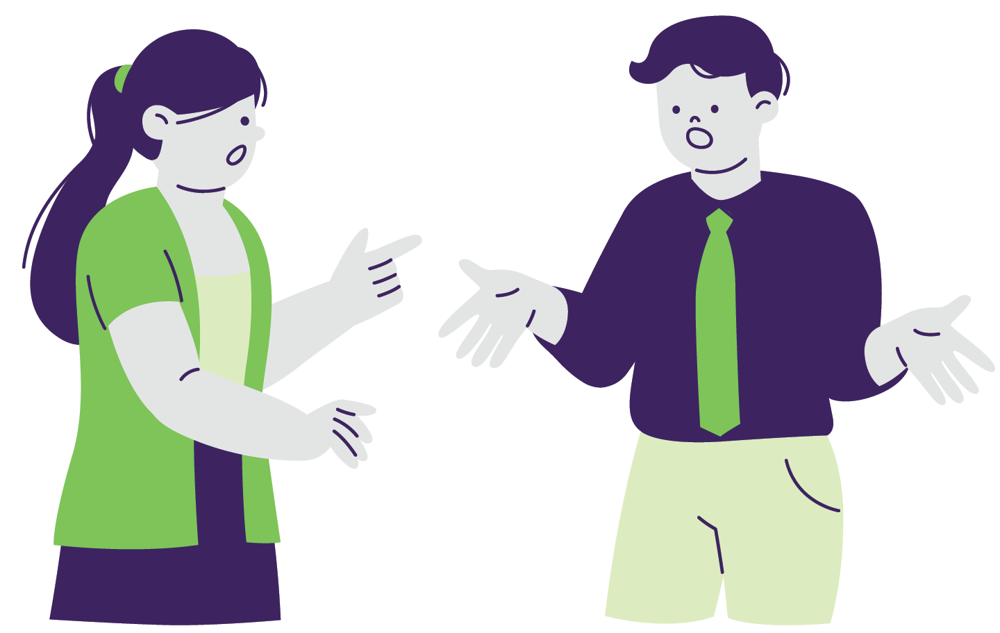
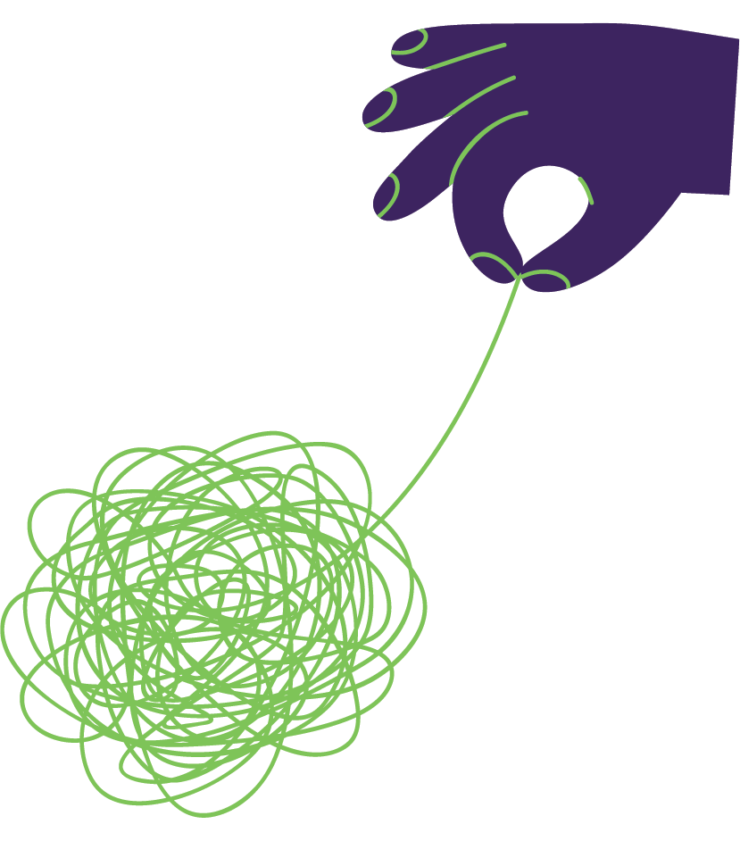
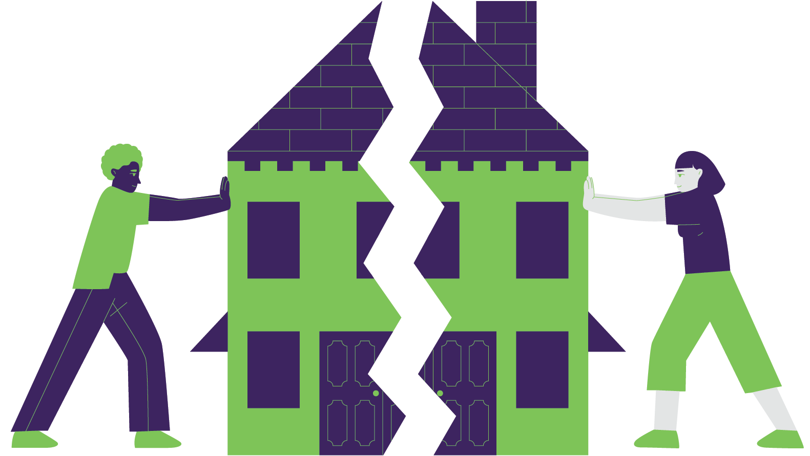
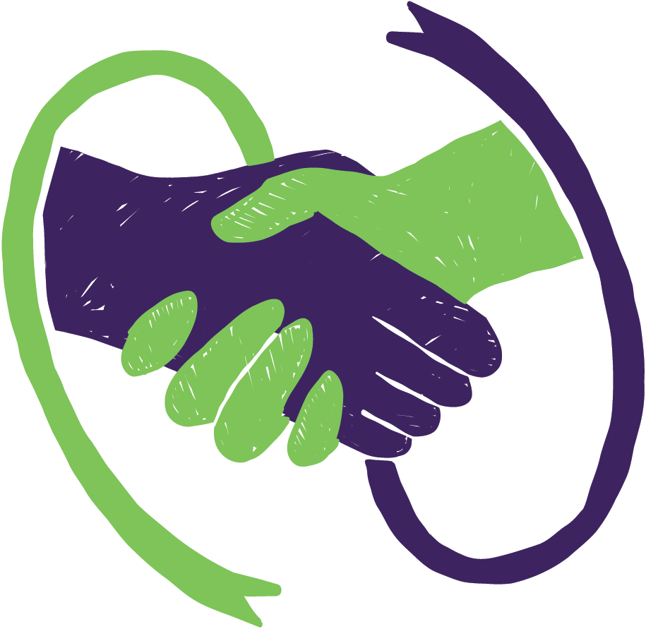

Recognizing trauma in ourselves and partner is crucial when cultivating the grace and compassion to get through the days and the years. In this blog, we walk through different strategies to maintain a connection with our partners as KARES parents/caregivers.
Listen to this post
Important note:
Trauma is defined as a “deeply distressing or disturbing experience”. In this case, it is important to acknowledge that trauma is likely the lens through which we have experiences of parenting a child with a RARE diagnosis. This blog does not dispute or diminish the love and appreciation for our KARES children; instead, it holds this as a truth and recognizes the challenges that parents/caregivers may face. Read on to understand the nuances in this topic.
People Can Experience Trauma Differently… and that’s ok
Two people can go through the same event but experience it in different ways. This can be a source of frustration in relationships when we don’t understand the differences in how our partner experienced something versus how we experienced the same event.
Recognizing that we process things differently and identifying how we and our partners respond in different situations can increase our compassion and understanding of one another’s responses. This would mean, both our and our partners’ reactions would no longer be taken personally.
Below is a range of how we experience parenting our KARES children. Can you relate to any of these?
Mood Exhaustion, confusion, feeling like “in a fog”, irritability, anxiety, anger, agitation, sadness, numbness, guilt, grief, dissociation, tearfulness, overwhelm, detached, helplessness
Behaviors Hyper-vigilance, blunted affect, snaps or angers quickly, zones out or checks out, overly attempting to fix or control, forgetting things, use unhealthy ways to “cope”, distancing, smothering, avoidance of triggers, social withdrawal
Physical Sleeplessness or insomnia, mysterious aches and pains, frequently sick, stomach issues, headaches, intense startle, tightness in chest (panic), flashbacks, sudden weight loss or gain
Be sure to check in with each other and yourself so that you can take care of yourselves before caring for everyone else
Before I could release
The weight of my sadness
And pain, I first had to
honor its existence
— Yung Pueblo
So what do we do when we see these trauma responses in ourselves?
Tips for Self-Care and Regulation

Consciously prioritize yourself and your relationship.
We can get hyperfocused on our children. Intentionally take a step away from the busy household/schedule and take time to take care of each other. “Put the oxygen mask on yourself before your children” – this ensures you are well equipped to take care of everyone else who needs your support.
Recognize that what you might be experiencing at times is a cycle of grief.
When we have a child with a diagnosis, we can look at parenting through the lens of grief which is not a linear process – can include anger, negotiation, acceptance etc.
Develop a self-care routine that is non-negotiable.
Turn to the things you know that work or look for ideas online, social media etc.
Ensure that in your relationship, self-care is supported and encouraged
Make supporting your own and one another’s needs an absolute baseline for survival!
If the stress threshold has been surpassed, encourage extra self-care or seek professional support (individual or couple)
Be kind to yourself, knowing that there will be times when you are on top of your self-care routine and other times when life just prevents it from happening. The important thing is to have a self-care strategy set up so you can access them as needed.
The Tools for Tough Times

You and your partner are allies. Turn towards each other rather than away. I am here for you, I value you, we are getting through this. Team Us!
Attune: checking in with one another.
Recognize when stress from your parenting journey is being taken out on your partner and be able to speak about that with one another
Find and connect with your tribe beyond the relationship (friends, neighbors, church, support groups etc). Our partner can’t be everything for us. When we expect that, we can often get let down because it is an unrealistic expectation for our partner. Tapping into our larger community can help a lot with this.
The Divine Pause:
When you start feeling in your body that you are feeling triggered by whatever is going on, take a second to regulate, breathe and remember you have choices and options about how you want to respond rather than react.
Fighting Fair: Techniques to Cool the Flames

When you and your partner are already in a situation that is causing conflict between the two of you, using techniques to fight fair can create an environment where you can air your grievances but still be respectful of each other’s emotions.
Make sure your start-up is soft rather than harsh
Listen to your partner by reflecting and asking clarifying questions
Learn to use repair attempts
Monitor your physiology during tense discussions
Know that a compromise is likely necessary
Become more tolerant of each other’s imperfections and limitations
Remember, no one is right. There are always two subjective sides.
With this mindset, here are some tips on how you can express yourself in difficult conversations

Complain don’t’ blame, watch for contempt, criticism: Remember “I feel” and “I need”. Good old “I statements”.
Describe what is happening without your evaluation of it
Be clear and positive about what you need
Be polite
Be appreciative
Don’t store things up
Notice when you or your partner is getting flooded and have an agreed-upon exit for soothing self or each other. Example: “I can see you are starting to shut down, should we take a break and come back to this later?”
Here are some ways you can soothe yourself when feeling flooded
Change Environment; go outside, move into a different room, etc
Use senses to come back into body
Use a meditation app and find a 5 minute one
Do a quick stretch
Cuddle a pet
Splash face with cold water or submerge hands in ice water
Progressive muscle tightening and relaxation
Laugh – watch a favorite funny thing e.g., comedy skits on YouTube or a feel-good show
Feel it and let it move through you and away without pushing it away or grasping e.g., clouds in the sky technique – can’t control what clouds do, but you can watch them and let them pass you by. Apply this same concept to the situation
Mix and match the above
Accept Bids of Repair

Fights and tension are going to happen. Consider if it is something that needs to be discussed further and go through the steps of fighting fair.
Be aware of the ways you personally keep a fight going, such as stonewalling, silent treatment etc
Be willing to make the repair through sincere apology, reflecting your understanding of your partner’s grievance, humor, touch
Be willing to accept the attempt of repair without dragging it back into the trenches even if you are still a little annoyed. Accept influence rather than digging into your point.
Building Lasting Connection

Nurture Fondness and admiration: maintain and cultivate respect for each other and acknowledge and honor one another’s worth and strengths and talk about them
We have a choice in what we see and amplify in our relationship. Appreciation and gratitude: see what is good and say it! Don’t hold back from acknowledging the good because you are still mad about the “bad”.
Make micro-moments of connection happen every day. How can you show that you’re giving extra attention to your partner even in simple acts of kindness?
Find an agreed upon time each week to have a check-in. Should be timed and have an agenda to discuss and problem-solve and stay on track. At the end of the time, have something pleasant planned – can be small and symbolic
Get creative about touch, intimacy, pleasure, beyond sex
Try to find the moments of connection and pleasure even when the timing is difficult.
Remembering and seeing one another as an individual and partner, not just a parent. What is attractive, cute, sensual, sexy, funny, unique, playful that makes your relationship special? Keep that in focus.
As much as it will occupy you, don’t let the diagnosis and day to day grind take away what is essential about you and your connection with one another
Mindfulness above all … seek calm and meaning in the moment together rather than rushing to distract or tune out
No one is a mindreader but also: see the need, fill the need for one another when possible
Showing effort over perfection is everything!
Resources
Up Next
With a fuller toolbox to handle conversations with your partner, you can now navigate to the Home Page for a list of all the blogs, or proceed to the next blog in the KARES Library: Understanding PDA in Neurodivergent Youth